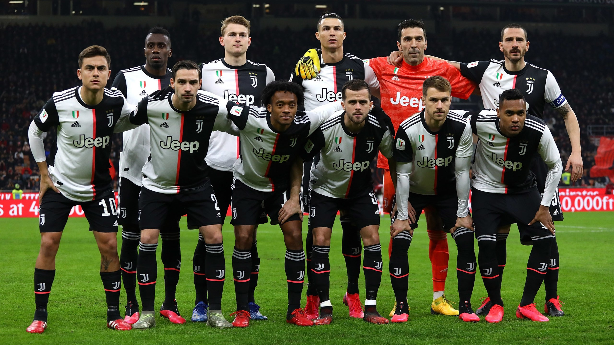
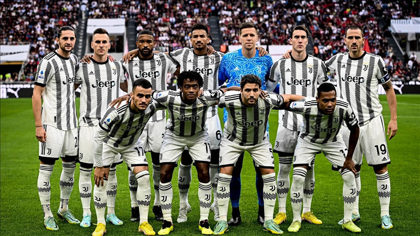
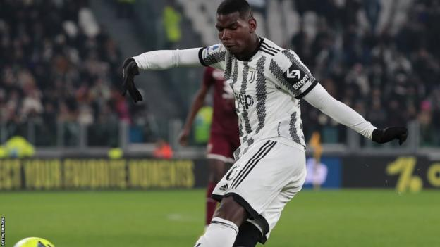

OPPOSITION FOCUS
VICENZA | NEXT GEN
This evening, Thursday 2 March, at 20:30 CET the Allianz Stadium hosts
the first leg of the Serie C Coppa Italia final between Juventus Next
Gen and Vicenza. The opening scene of the final act which has seen
Massimo Brambilla's team among the undisputed protagonists of the
competition.

STATS FROM THE GAME
JUVENTUS - TORINO | SERIE A
Other than Alex Sandro's 300th game in all competitions for Juventus and
Wojciech Szczesny's 200th game - as well as his 100th victory in Serie A
with Juve, the roller-coaster 4-2 win over Torino provided a series of
statistics and curiosities. Four goals in the first half between
Juventus and Torino for the first time since 25th January 1995 indicated
it was to be a match to remember.

300 APPEARANCES IN BIANCONERO
FOR ALEX SANDRO
300 appearances with the shirt of Juventus. Alex Sandro joined an
exclusive club of players that have made turned out in our colors three
hundred times. The milestone figure was reached in the Derby della Mole.
Let's retrace those eight-seasons towards the 300-match mark and relive
some of the many unforgettable moments.



